The Marquee Selection tools provide various ways of applying selections to your image.
The Marquee Selection tools are available in various shapes including Rectangular, Elliptical, Column, and Row. All marquees are applied by simply selecting the desired shape and then dragging on your image.
A Freehand Selection Tool is also available for defining the selection area as a drawn pencil line, polygonal straight line edges, or snapped magnetic nodes.
Settings
The settings for each tool vary but may include some or all of the following settings, which can be adjusted from the context toolbar:
Mode—select from New, Add, Subtract, and Intersect.
Refine—click to display the Refine Selection dialog to access advanced selection settings.
Feather—reduces the sharpness of selection edges by partially selecting edge pixels.
From Center—when enabled, the selection will be drawn from its center. This is exclusive to the Elliptical Marquee Tool.
Antialias—if this option is off (default), pixels at the edge of the selection are opaque. When selected, selection edges are smoothed by applying transparency to edge pixels.
Width—sets the width of the Column or Row selection tools.
About selection modes
The four modes available from the context toolbar affect how your selection develops.
New—cancels all current selections and creates a new selection.
Add—adds areas to the current selection. If there is no selection in place, a new selection will be created.
Subtract—removes areas from the current selection.
Intersect—a new selection area is created from the overlap between the drawn shape and the current selection.
Freehand selection types
The Freehand Selection Tool offers three distinct selection types:
Freehand—creates a selection which follows the cursor's exact movements.
Polygonal—creates a selection based on connected straight lines with a single click defining each change in direction.
Magnetic—creates a selection by creating automatic nodes that snap to distinct edges while following the cursor's movement. Click to define custom node positions.
  Marquee Selection Tools
 Marquee Selection Tools